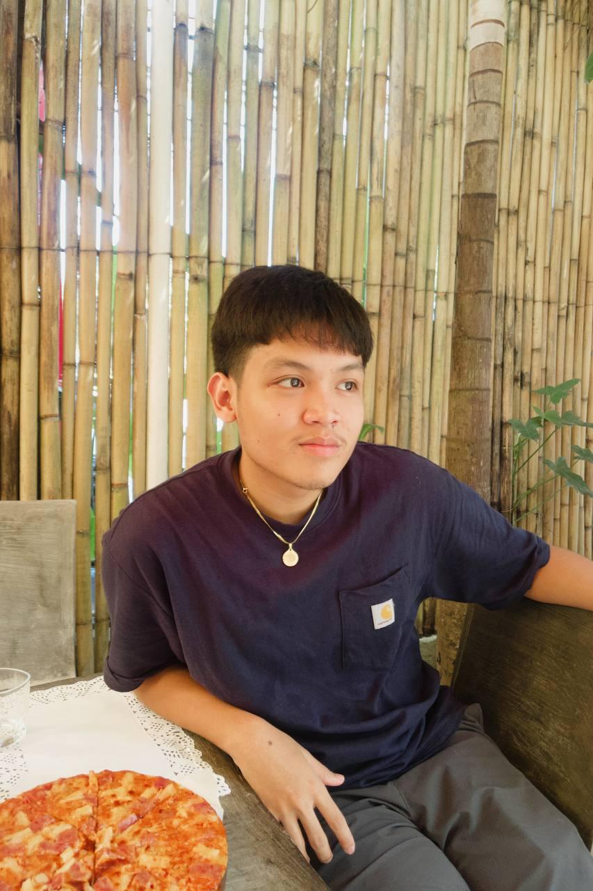

Data Encoder
Black Pig Samgyupsal
- Created and updated accurate records.
- Sorted correspondence and supported day-to-day office coordination.
- Helped schedule meetings and appointments.
Computer Science Student · Iloilo City, Philippines
I’m Ralph Martin Chua, a BS Computer Science student at West Visayas State University with interests in web and mobile development, UI/UX, and graphic design.

01 / About
I’m a motivated Computer Science student who enjoys turning ideas into clean, friendly digital experiences.
My interests span frontend and web development, mobile app development, and visual design. I bring curiosity, clear communication, and a collaborative mindset to each project, and I’m always looking for opportunities to learn and contribute.
More about my background02 / Experience & Education
Black Pig Samgyupsal
Black Pig Samgyupsal
West Visayas State University
Current undergraduate studies in computer science.
Hua Siong College of Iloilo
Completed senior high school in the Science, Technology, Engineering, and Mathematics strand.
03 / Selected work
A mix of personal builds, business tools, and local ventures connected to my work and interests.
A local samgyupsal restaurant in Mandurriao, Iloilo City, where I gained hands-on experience in data entry and operations.
View project Visit FacebookA point-of-sale project for restaurant service and order management.
View projectAn inventory project for tracking stock and supplies for an ice cream shop.
View projectA productivity tracker concept for organizing tasks and keeping everyday work moving.
View projectA responsive portfolio that brings together my background, experience, skills, and work in one place.
View projectA thesis project exploring context-specific universal adversarial perturbations to protect images across platforms from CLIP-based generative AI.
View projectAn NLP-based system that compares resumes with job descriptions using TF-IDF and cosine similarity.
View projectA restaurant-focused point-of-sale concept inspired by the day-to-day needs of a samgyupsal business.
View project04 / Skills
Beyond the screen
When I’m not working on a project, I enjoy art, outdoor activities, gaming, music, and reading tech blogs.
05 / Contact
I’d be glad to connect and hear what you’re working on.
Email me